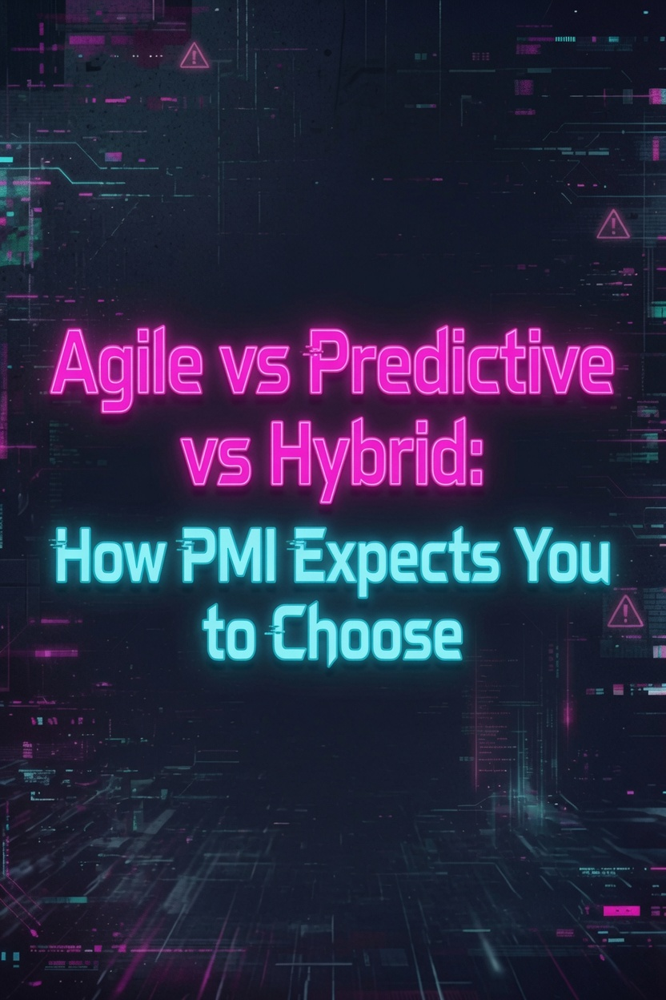

Agile vs Predictive vs Hybrid: How PMI Expects You to Choose

The PMP exam asks one question in a dozen different ways: which methodology fits this project? PMI does not favor one approach. It expects you to match the approach to the project characteristics. You get a scenario. You get three options: predictive, agile, hybrid. The wrong choices always violate something about the project context.
This guide covers what each methodology means under PMBOK 8, how PMI's decision framework works, and ten scenarios that show you how to apply it. By the end you will know how the exam tests methodology selection and how to eliminate wrong answers before you read the choices.
What Is Predictive?
Predictive lifecycle is what most people call waterfall. Project phases run sequentially. You complete one phase, gate-review it, and move to the next. Requirements are defined upfront. Scope, schedule, and cost are baselined before execution begins. Changes go through formal change control.
With predictive approaches, much of the planning happens up front. The project manager drives detailed planning. The team executes against a fixed plan. Phase-gate reviews confirm deliverables before the next phase starts. This approach demands clear requirements and stable scope.
Predictive projects flow through phases aligned with PMBOK 8's Focus Areas: Initiation, Planning, Execution, Monitoring and Controlling, and Closure. PMBOK 8 renamed Process Groups to Focus Areas, but the structure remains sequential. Each phase produces specific deliverables. The next phase does not start until the current one passes its gate review.
Change control is formal. Anyone requesting a change submits it to the Change Control Board. The board evaluates impact on scope, schedule, budget, and quality. Approved changes update the baseline. Unapproved changes are rejected. This structure prevents scope creep but makes mid-course corrections expensive.
PMP exam tell. Look for phrases like "fixed scope," "detailed upfront planning," "phase-gate reviews," and "formal change control." If the scenario describes a project with known requirements and a firm completion date, predictive is the starting point.
What Is Agile?
Agile lifecycles deliver work in short iterations. Requirements emerge and evolve. The team inspects and adapts at the end of each iteration. Stakeholders see working increments every sprint and adjust priorities based on what they see.
PMBOK 8 discusses agile in Section 4 (Project Life Cycles) alongside the Resources and Stakeholders performance domains. Scrum dominates: timeboxed sprints, daily standups, sprint reviews, retrospectives. Kanban visualizes workflow and limits work in progress. The common thread is empirical process control: inspect and adapt based on feedback. Lean practices contribute concepts like minimum viable product and iterative experimentation.
The project manager role emphasizes servant leadership. You facilitate, remove impediments, and protect the team from external disruptions. The product owner manages the backlog and prioritizes work. The team self-organizes around how to deliver each iteration's commitments.
PMP exam tell. Phrases like "evolving requirements," "short iterations," "inspect and adapt," "stakeholder feedback every sprint," and "self-organizing team." When the scenario involves uncertainty and the need for frequent course correction, agile enters the picture.
What Is Hybrid?
Hybrid lifecycles blend predictive and adaptive approaches. You plan the architecture, milestones, and budget upfront. You deliver the details iteratively. PMI positions hybrid as a legitimate choice, not a compromise or a fallback.
A common pattern: predictive planning for requirements and architecture, agile development for coding and testing, predictive deployment and handoff. The hybrid approach works in regulated industries where you need compliance documentation AND fast delivery. Another pattern: predictive for fixed-scope modules, agile for exploratory modules within the same program.
PMBOK 8 addresses hybrid explicitly in its tailoring guidance. Tailoring means adjusting the approach to fit project context. When neither pure predictive nor pure agile fits, hybrid is the answer. The Guide to the Project Management Body of Knowledge dedicates an entire section to how project managers should combine elements from both lifecycles based on project characteristics.
Hybrid takes many forms. Sequential phases with iterative delivery within each phase. Predictive requirements and design followed by agile construction and testing. Waterfall for hardware components and Scrum for software components in the same product. The common thread is intentional blending, not accidental mixing.
PMP exam tell. Phrases like "fixed milestones with iterative delivery," "regulatory compliance with agile teams," "tailored approach," and "blend of iterative and sequential phases." If the scenario includes both fixed and flexible elements, hybrid is the cue.
PMI's Decision Framework
PMI does not tell you "use agile for software and predictive for construction." The decision framework considers six project characteristics. You evaluate each one and the answer emerges.
| Characteristic | Predictive | Agile |
|---|---|---|
| Requirements clarity | Known and stable | Evolving or unknown |
| Delivery frequency | Single delivery at project end | Incremental, every iteration |
| Risk tolerance | Low tolerance, formal controls | High tolerance, adaptive |
| Team structure | Distributed, specialized roles | Co-located, cross-functional |
| Stakeholder involvement | At phase gates | Continuous |
| Change management | Formal change control board | Product owner reprioritizes backlog |
The framework is not a mechanical checklist. It is a set of questions that lead to a tailored approach. When most characteristics point to one side, the choice is clear. When they split, hybrid fills the gap.
A real example clarifies how the framework works. A pharmaceutical company needs a new patient portal. The regulatory requirements are fixed: HIPAA compliance, audit trails, accessibility standards. The user interface, however, needs iterative testing with actual patients. The framework says: fixed regulatory scope goes predictive, UI design goes agile. The correct answer is hybrid, with predictive compliance gates and agile UX sprints running in parallel.
The exam rarely asks you to pick a methodology as a standalone question. It describes a project and asks what the project manager should recommend. Evaluate requirements clarity first, then delivery structure, then stakeholder context. The wrong answers violate one of the six decision factors.
10 Scenario Examples
Each scenario below describes a project context. The recommended methodology follows PMI's framework. Read the scenario, decide your answer, then check the rationale. These patterns repeat on the PMP exam in different industries and project types.
| # | Scenario | Best Fit | Rationale |
|---|---|---|---|
| 1 | Building a bridge with detailed blueprints and regulatory permits | Predictive | Requirements are fixed. Phase-gate inspections are legally required. Mid-stream changes to bridge spans cost millions. |
| 2 | Developing a mobile app where user preferences are unknown | Agile | Requirements evolve. Short iterations let the team test features and adjust. Stakeholder feedback every sprint drives direction. |
| 3 | Implementing an ERP system with fixed go-live date but configurable features | Hybrid | Go-live date is fixed. Core requirements are known. Configuration details emerge during implementation. Plan the cutover predictively, deliver modules iteratively. |
| 4 | Manufacturing a medical device under FDA design control | Predictive | FDA requires phase-gate validation. Design history files and traceability matrices demand upfront documentation. Scope changes trigger regulatory re-review. |
| 5 | Creating a marketing campaign for a product launch with tight deadlines | Hybrid | Launch date is fixed. Campaign concepts can be tested and refined. Plan the campaign structure predictively, develop creative assets iteratively. |
| 6 | Building a data pipeline where requirements are clear but technology choices are new | Agile | What the pipeline must do is known. How to build it with new tech is not. Iterations allow the team to experiment and learn without over-investing in the wrong approach. |
| 7 | Upgrading a bank's core system with regulatory approval at each stage | Predictive | Regulators require evidence of testing and security validation before each phase. Sequential gate reviews are mandatory. Agile delivery cycles would violate compliance. |
| 8 | Running a multi-team program where one team builds a fixed API and another builds a flexible frontend | Hybrid | The API team follows predictive (contract-first, fixed spec). The frontend team follows agile (iterative UI). Different methods fit different modules. |
| 9 | Developing a prototype for an innovation lab with no defined requirements | Agile | The goal is discovery, not delivery. Requirements do not exist yet. Short experiments generate learning. Predictive planning would waste time on assumptions. |
| 10 | Migrating data from a legacy system to a new platform with strict cutover windows | Predictive | Data mapping is knowable upfront. Cutover windows are fixed. Rollback procedures must be tested in sequence. Iterative migration risks data inconsistency. |
Test your methodology selection skills. Download our FREE PMP Practice Test for scenario-based questions on agile vs predictive vs hybrid.
Need a structured study system? The PMP Exam Cracker delivers 64 pages of compressed study guide, 80 practice questions, and an annotated answer key. Built for the 8th Edition exam.
Exam Traps
The PMP exam includes deliberate traps around methodology selection. Recognize these patterns to eliminate wrong answers fast.
The agile vs predictive vs hybrid question tests judgment, not memorization. PMI gives you the framework. The exam tests whether you can apply it to unfamiliar scenarios.
Start with requirements clarity. Are they known or unknown? Follow with delivery structure. Can you break the work into increments? Then check risk tolerance and team structure. The answer comes from the combination.
The day before your exam, review the six characteristics and the ten scenarios. If you can assess a project description and identify which factors drive the methodology decision, you will handle any methodology question the exam throws at you. PMI gives you the framework. Your job is to practice applying it.
Last updated: June 27, 2026